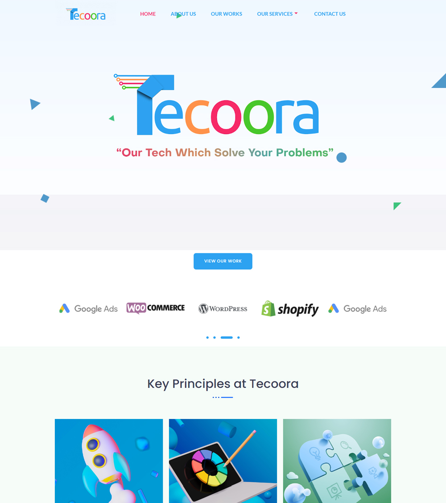
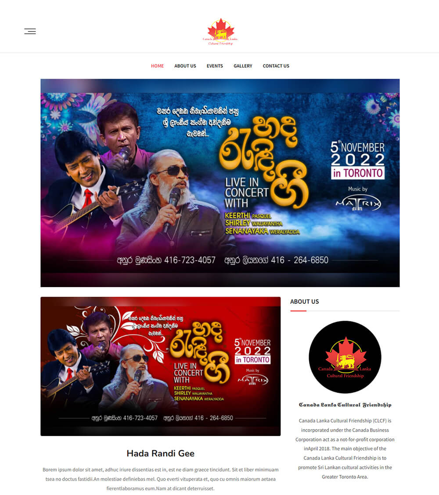
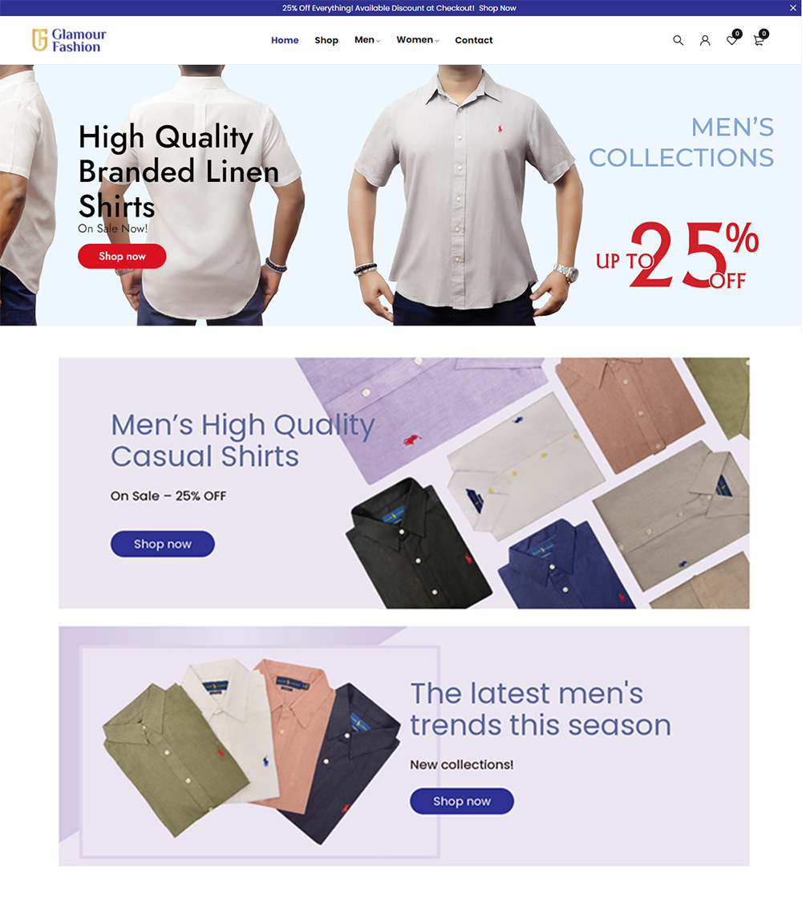
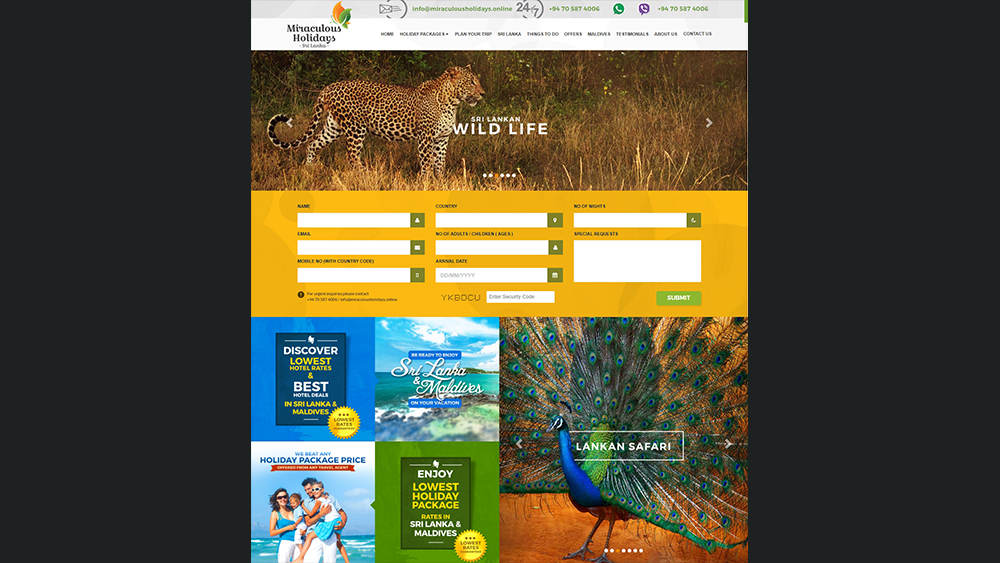
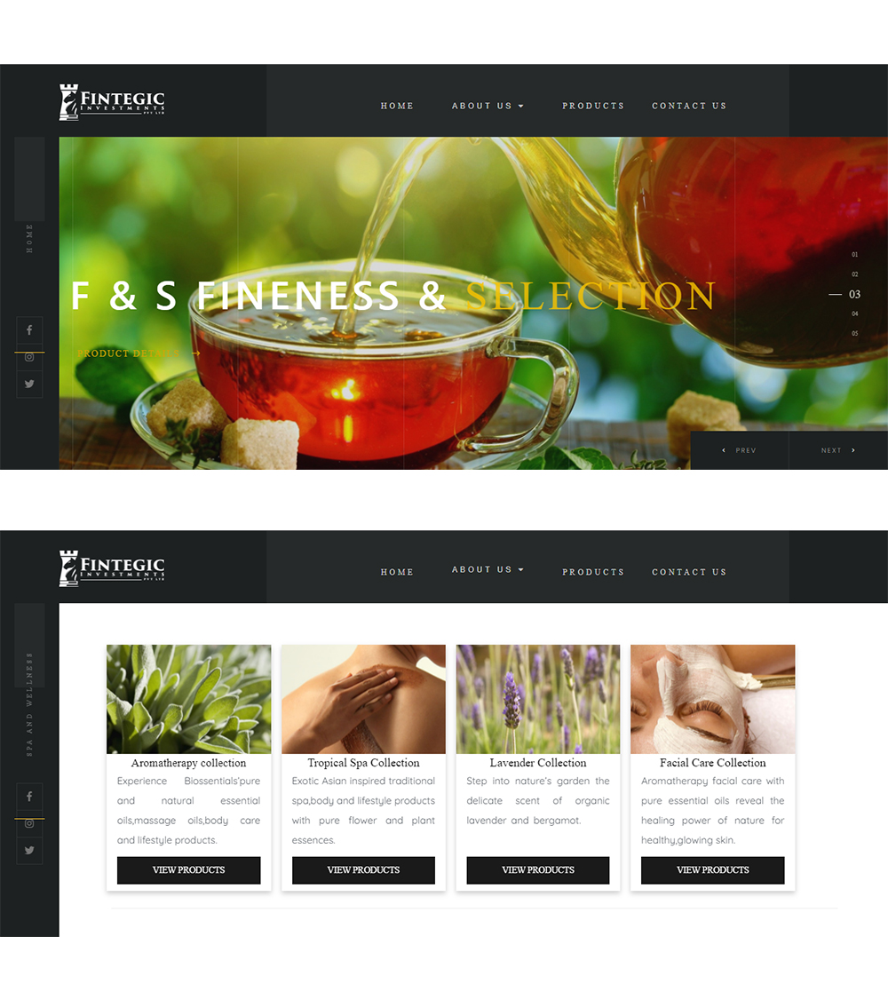
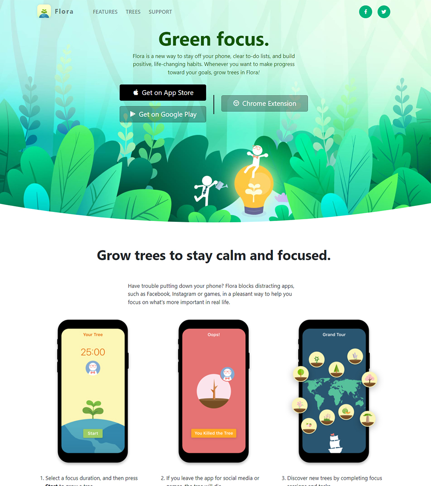
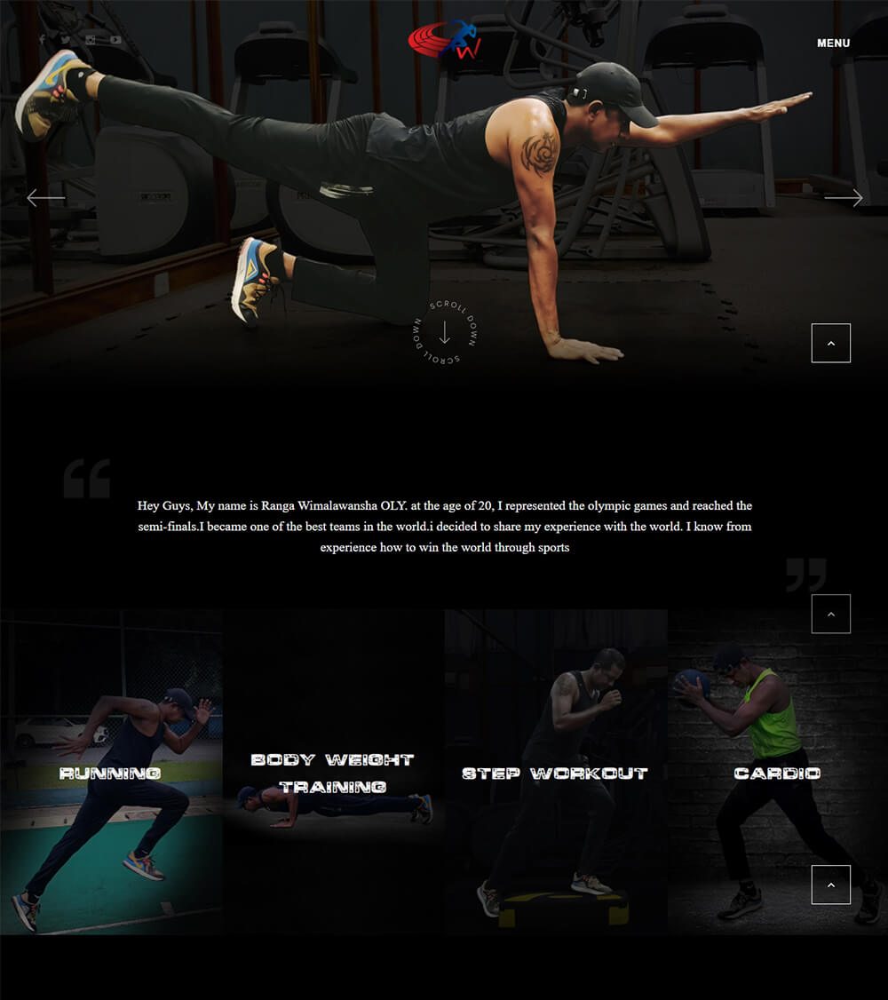
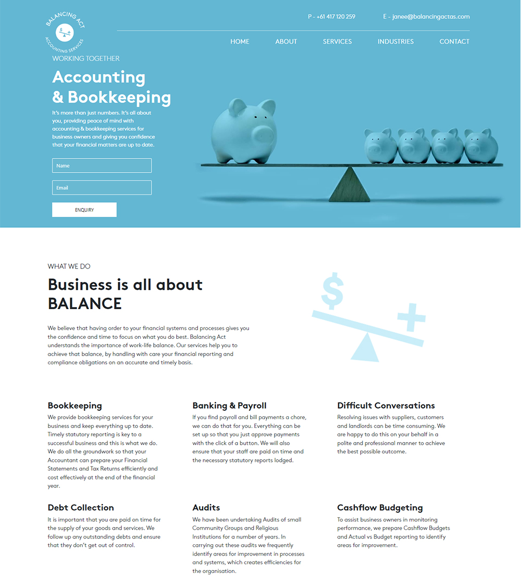
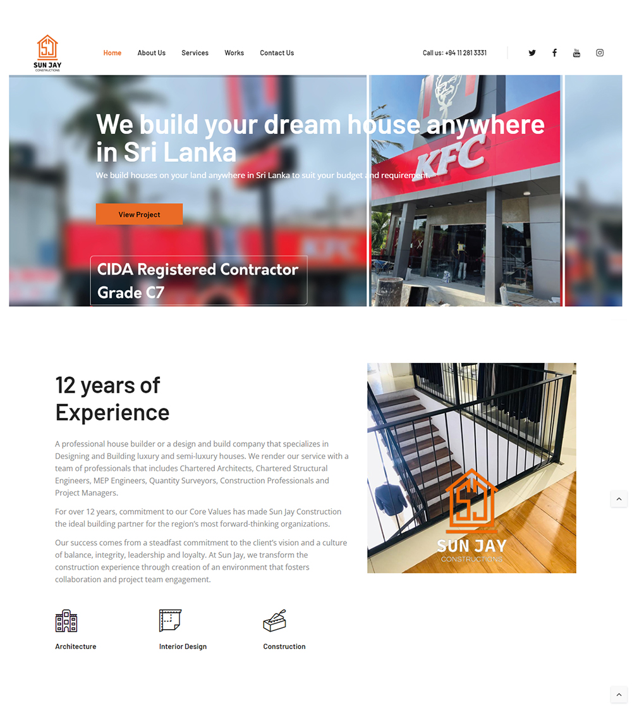

PORTFOLIO
Audio Book Store
www.audibuk.com
Wordpress/Elementor
Tecoora Digital Solutions
www.tecoora.com.au/

Wordpress/Elementor
Canada Lanka Cultural Friendship(Event Website)
www.clcfriendship.com

Wordpress/Elementor
Men's Clothing Store
www.glamourfashion.lk

Wordpress/Elementor
Holiday & Resort Booking
www.miraculousholidays.online

HTML/PHP/MySQL
Women's Clothing & Jewelry Store
www.yesfashion.com
Wordpress/Elementor
The Nature Conservancy
www.nature.org

Wordpress/Elementor
Company Profile & Products Showing
www.fintegic.com.mv

HTML/JS/CSS/Bootstrap
Flora Green Focus
www.flora.appfinca.com

Wordpress/Elementor
Personal Fitness Trainer (Sri Lanka Olympic Champian)
www.rangawimalawansha.lk

HTML/JS/CSS
Balancing Act Accounting Website
www.balancingact.au

Wordpress/Custom Coding
Sun-Jay Constructions
www.sunjayconstructions.com

HTML/JS/CSS/Bootstrap